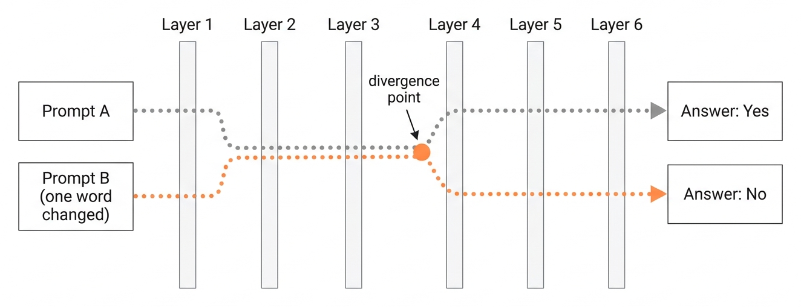

Can We Understand Why an LLM Changes Its Answer?

In one sentence
Change one harmless word in a prompt and a language model may flip from "yes" to "no" — can we find what changed inside the model to cause the flip, and use that to predict which answers are fragile?
What is the problem?
Ask a model: "Is it safe to take ibuprofen with this medication?" and it says no, with a careful explanation. Ask again with "Can I safely take ibuprofen with this medication?" — the same question, in different words — and it says yes. Swap the order of two answer options in a multiple-choice question, add an extra space, or say "Please" at the start, and the accuracy on a benchmark can move by several points.
For a human, those prompts are the same question. For the model, they are different sequences of tokens, and somewhere between the first layer and the last, the two runs go their separate ways. We see only the end result: different answers, sometimes with completely different reasoning attached.
Right now we mostly treat this as a black-box phenomenon: we measure how often answers change across rephrasings. This open problem asks the next question: can we identify the internal representation changes that cause an LLM to switch its reasoning or final answer?
Why does it matter?
- Reliability. If an answer flips under harmless rephrasing, the model never really "knew" it. Being able to spot such fragile answers is a direct route to the uncertainty signals in OP-19.
- Security. Attacks such as jailbreaks and prompt injection are, at heart, small input changes that cause big behaviour changes. Understanding the mechanism of a flip helps defend against deliberate ones (see OP-20).
- Evaluation. Benchmark scores that move with formatting are not measuring what they claim. Knowing why helps build fairer tests.
- Trust in explanations. A model's written reasoning does not always reflect what actually drove its answer. Looking inside is one way to check.
What would a solution look like?
Imagine running two nearly identical prompts through the model side by side and recording its internal state at every layer. In the early layers the two runs should look almost the same — they are reading almost the same text. At some point they may separate. If they separate early and stay apart, the model is treating the wording difference as meaningful. If they stay together until a specific layer and then split sharply, that layer is where the "decision" is being made.

A useful answer would let us say things like: "the flip happens around layer 18, it is carried mostly by these attention heads, and it moves the state along a direction that also separates confident from unconfident answers." Better still, it would let us look at a single prompt and say how close it is to such a tipping point — before anyone tries a rephrasing.
The key idea: answers as regions, flips as border crossings
Inside a model, every prompt becomes a point in a very high-dimensional space at each layer. Prompts that lead to the same answer tend to gather in the same region. A flip, in this picture, is a small step in input that becomes a step across the border between two regions.
That suggests two things to measure. The first is distance to the border: answers whose internal state sits close to a boundary should be the ones that flip easily, exactly like the fragile predictions in OP-01. The second is the shape of the regions: if semantically equal prompts form a tight, well-connected cluster, the model treats them as one question; if they are scattered or split into several islands, the model is reacting to surface wording. Tools from topology — which describe how clusters connect, split and form holes — are a natural way to describe that shape, which is why I see this as a bridge between topology and LLMs (see OP-04).
Why is it hard?
- Huge, entangled internals. Modern models have billions of parameters and thousands of dimensions per layer. Single neurons rarely mean one clean thing; concepts are spread across many.
- Correlation is not cause. Seeing that two runs differ at layer 18 does not prove layer 18 caused the flip. Proving cause needs interventions — swapping parts of one run into the other and seeing whether the answer follows.
- "Same meaning" is fuzzy. Two prompts that look equivalent to one person may carry a real difference in nuance. Building a fair set of truly equivalent prompts is itself a research task.
- Reasoning is long. With step-by-step reasoning, a flip may start with one different word early on and snowball across hundreds of generated tokens.
- Results may not transfer. A mechanism found in one small model may look different in a larger model or a different architecture.
What has been tried so far
- Measuring prompt sensitivity. Studies that show how much benchmark accuracy moves with formatting, option order or phrasing — establishing the problem, but from the outside.
- Reading predictions layer by layer ("logit lens" and "tuned lens"): decoding what answer the model would give if it stopped at each layer, to see when the final answer forms.
- Causal tracing and activation patching: running a clean and a changed prompt, then copying internal states from one run into the other, to find which layers and positions actually carry the decisive information.
- Circuit analysis: reverse-engineering small groups of attention heads and neurons that implement a specific behaviour.
- Representation directions: finding directions in activation space linked to concepts such as truthfulness or refusal, and showing that pushing along them changes behaviour.
- Comparing representations with similarity measures, to check whether two inputs or two models encode things alike.
These tools are powerful but mostly used to explain one behaviour on one task. Less work uses them systematically on flips — pairs of near-identical prompts with different answers — and asks whether the flips share a common internal signature.
How I would approach it
- Build sets of prompts that mean the same thing (rephrasings, reordered options, formatting changes) and mark which ones make an open-weight model change its answer.
- For every pair, record the hidden states at each layer and measure where they diverge — the picture in Figure 1, but for thousands of pairs.
- Use activation patching on a subset to check which divergences actually cause the flip, not just accompany it.
- Describe the cluster of equivalent prompts at each layer with distance and simple topological summaries, and test whether a messy, split cluster predicts that the answer will be unstable.
- Finally, try to predict flip-prone questions from a single prompt's internal state, and compare that with the uncertainty signals from OP-19.
Questions still open
- Do semantically equal prompts produce similar internal representations, and at which layers does the similarity break?
- Are there specific layers or attention heads that reliably predict answer instability?
- Is there a common internal signature shared by many different kinds of flips, or is every flip its own story?
- Can the geometry or topology of internal representations explain transitions in step-by-step reasoning, not just in the final answer? (see OP-04)
- Can we predict that an answer is fragile from one prompt alone, without trying rephrasings?
- Do deliberate attacks, such as prompt injection, use the same internal route as accidental flips? (see OP-20)
This problem connects the general failure-warning question in OP-01 with the language-model problems OP-19 (knowing when an answer is wrong) and OP-20 (resisting misleading context), and brings in the topology-based view of representations from OP-04.
Work on this together
If you work on mechanistic interpretability, representation analysis or topological data analysis — or you have seen a model flip in a way you could not explain — I would love to hear from you. Disagreeing with how I framed the problem is just as welcome.
Reach out about OP-21Further reading
- Kornblith et al. — Similarity of Neural Network Representations Revisited (ICML 2019)
- Elhage et al. — A Mathematical Framework for Transformer Circuits (Transformer Circuits Thread 2021)
- Meng et al. — Locating and Editing Factual Associations in GPT (NeurIPS 2022)
- Wang et al. — Interpretability in the Wild: A Circuit for Indirect Object Identification in GPT-2 Small (ICLR 2023)
- Turpin et al. — Language Models Don't Always Say What They Think: Unfaithful Explanations in Chain-of-Thought Prompting (NeurIPS 2023)
- Belrose et al. — Eliciting Latent Predictions from Transformers with the Tuned Lens (arXiv 2023)
- Zou et al. — Representation Engineering: A Top-Down Approach to AI Transparency (arXiv 2023)
- Sclar et al. — Quantifying Language Models' Sensitivity to Spurious Features in Prompt Design (ICLR 2024)